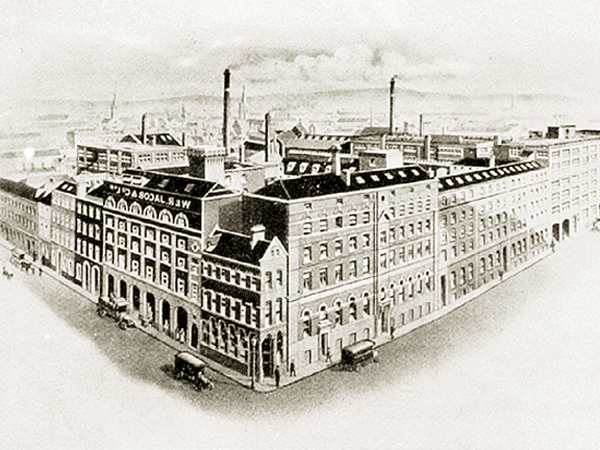

On Bishop Street, this now houses the National Archives. During the Rising, the 2nd Battalion was led to Jacob’s — one mile to the south of the GPO — under Thomas MacDonagh. Major John MacBride was second in command with Michael O’Hanrahan next. The garrison also included Peadar Kearney, who wrote the lyrics to the national anthem, Amhrán na bhFiann.
The building was a large triangular structure and filled most of the labyrinthine area between Peter Street and Bishop Street. It also had two towers. MacDonagh had approximately 130-150 men — supplemented by some Fianna Éireann and Cumann na mBan. These Volunteers were further sent to buildings in Camden Street, Wexford Street, and Aungier Street.
Jacob’s itself was largely ignored by General Lowe as he focussed on the GPO and Four Courts. News of the surrender did not reach Jacob’s until Sunday. MacDonagh, MacBride and O’Hanrahan were executed.
